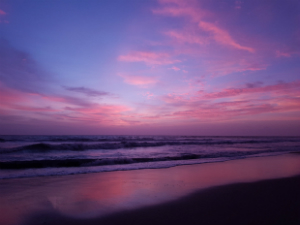

Why is the sky blue?

The colour blue is often associated with sadness – yet a cloudless blue sky definitely has the power to cheer you up.
Skies can project an astounding range of beautiful colours across the year, but blue is its default setting. But have you ever wondered why the sky is blue? We hope you’ve got your thinking caps on, because the science of blue skies takes a little brain power to understand.
Vision is determined and aided by light from the sun. Light from the sun is white. But this white light contains all the colours of the rainbow, and the colours travel at different frequencies.
The sky is blue because oxygen and nitrogen molecules in the Earth’s atmosphere scatter blue waves (short wavelength) from the sun’s light more than they scatter red ones (long wavelength). However, when we look at the sky during sunset, we see red, orange and purple (a mix of red and blue). That’s because the blue light has been scattered out and away from the line of sight.
The atmosphere can scatter light because the electromagnetic field of light waves induces electric dipole moments in gas molecules (yes it’s complicated, just go with it).

Science bods may ask why the sky is not violet, seeing as this colour has the shortest wavelength in the rainbow. Being on the outside of the colour spectrum, violet gets absorbed into the high atmosphere, and does not constantly get emitted in light by the sun. Also our eyes are much less receptive to seeing violet than blue. Having said that, we can definitely see violets and indigos, as proved when an actual rainbow appears.
So the final part of the puzzle is the way our eyes analyse colour. We have cones in our retinas that are receptive to greens, blues and reds. When analysing the colours in the sky, our blue receptors are stimulated more than the other two, which are stimulated equally. The net result of this, and the scattering of blue, is that our eyes perceive a singular blue sky. It’s theorised that we have evolved to isolate colours this way, and view them more crisply, as a survival advantage.
Some Author